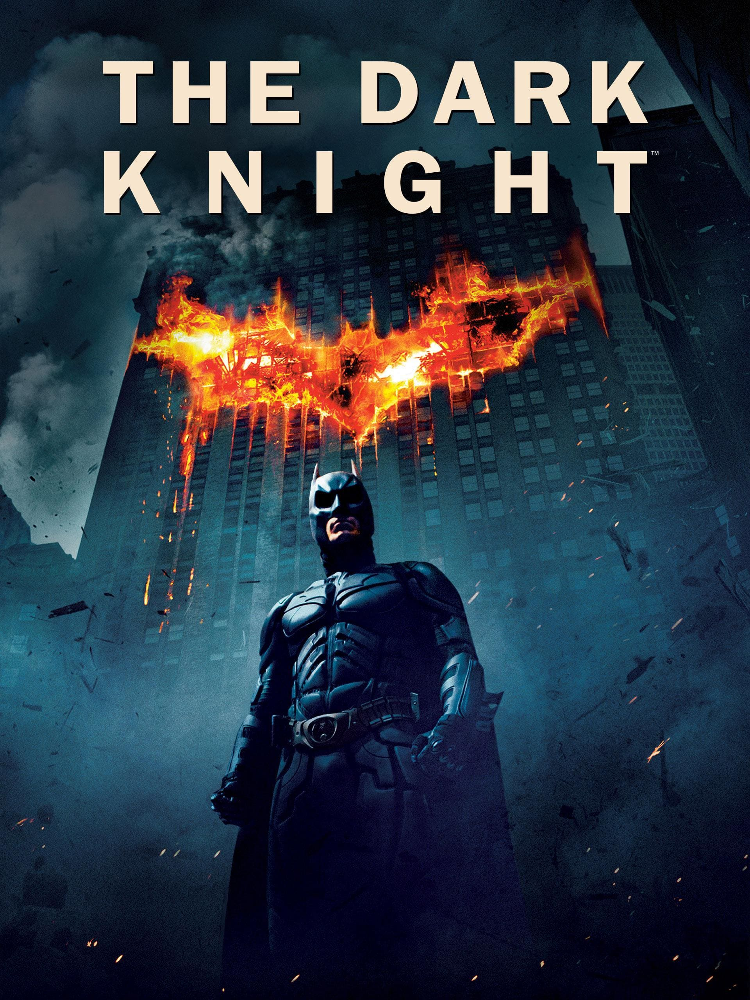
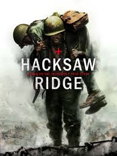
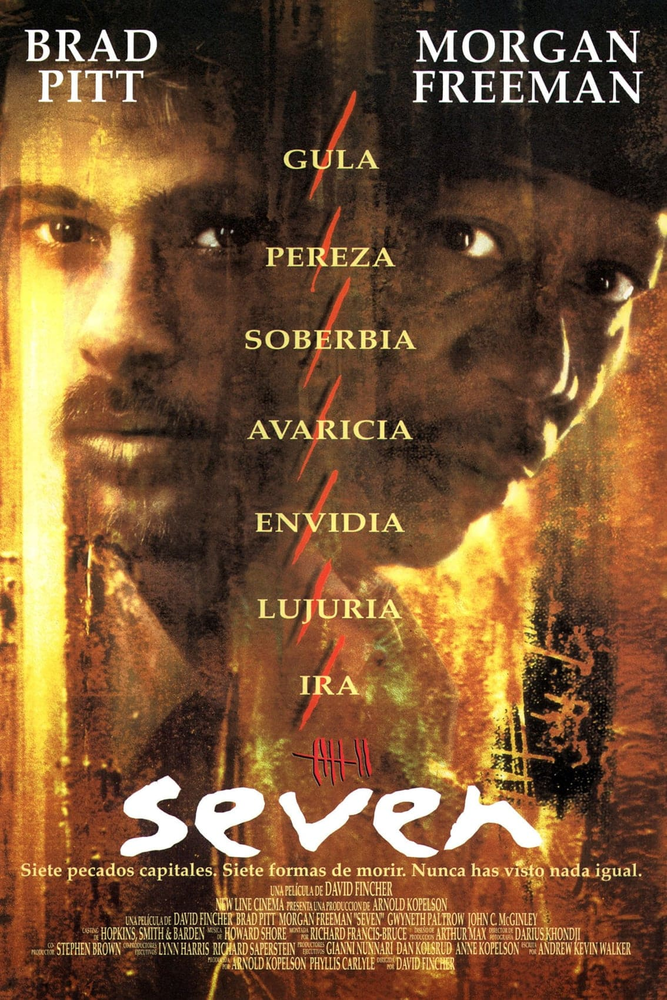
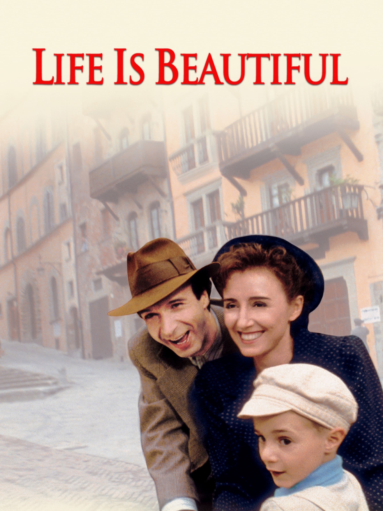

Algunas de mis películas y series favoritas son:
- Batman the dark knight: Película de acción y crimen sobre un vigilante en Gotham. 
- Hacksaw Ridge: Película de guerra basada en hechos reales sobre un médico en la batalla de Okinawa. 
- Seven: Película de misterio sobre un asesino en serie. 
- Life is Beautiful: Película de comedia dramática sobre un padre y su hijo durante la Segunda Guerra Mundial. 
- Breaking Bad: Serie de televisión sobre un grupo de criminales en Albuquerque.
- The Office: Serie de comedia sobre un grupo de empleados en una oficina.
Me encanta la trilogía de Christopher Nolan, pero sin duda mi favorita es "The Dark Knight".
| The Dark Knight Trilogy | |||||||
|---|---|---|---|---|---|---|---|
| Top | Película | Año | Descripción | ||||
| 1 | Batman the dark knight | 2008 | Película de acción y crimen que explora dilemas morales sobre el orden y el caos y donde Batman debe enfrentarse al Joker. | ||||
| 2 | Batman Begins | 2005 | Película de acción narran los orígenes de Bruce Wayne, su entrenamiento con la Liga de las Sombras y la decisión de regresar a Gotham | ||||
| 3 | The Dark Knight Rises | 2012 | Película de acción que sigue a un Bruce Wayne retirado que debe volver a ser Batman para enfrentar a Bane y salvar Gotham. | ||||
Una historia inspiradora de valentía y convicción.
Un thriller psicológico que explora la mente de un asesino. Película que no me canso de ver.
Una historia conmovedora sobre el amor y la esperanza en tiempos oscuros.

la mejor serie de todos los tiempos.

Gran referente de la comedia moderna.